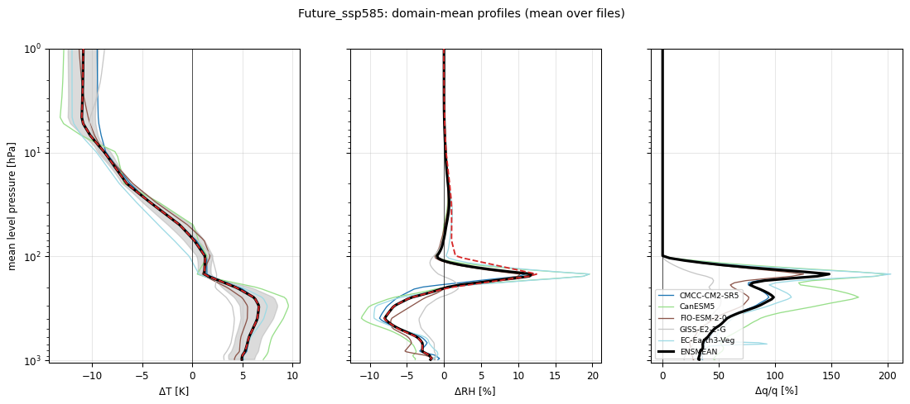
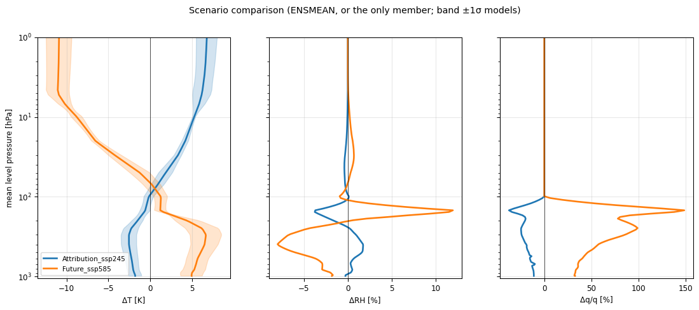
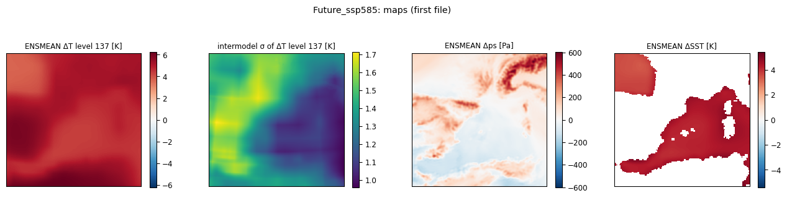
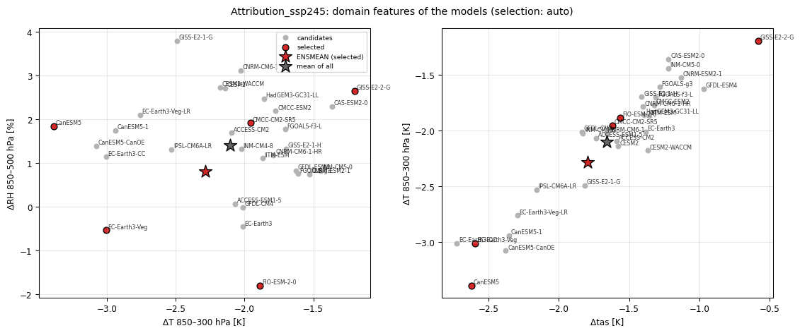
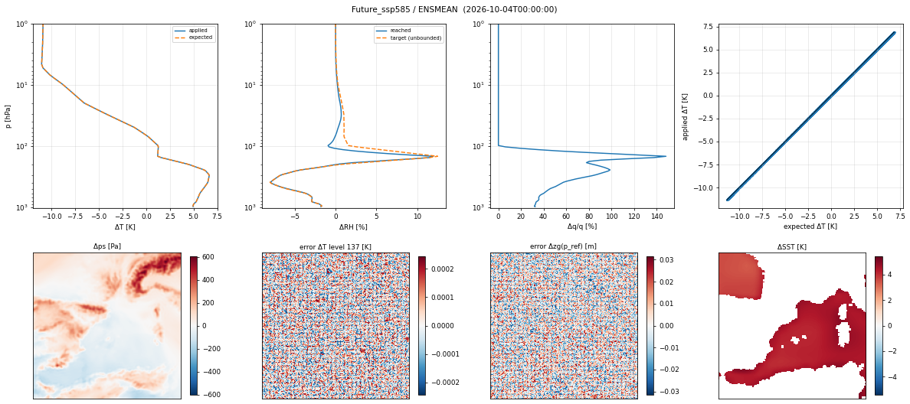

Perturbs the IFS model-level initial and boundary conditions of HARMONIE with monthly CMIP6 climate deltas. One job produces X+1 ready-to-use boundary sets per scenario, one per CMIP6 model plus their ensemble mean, and verifies every perturbed field.
A single SLURM job runs four steps. Each scenario yields one complete set of HARMONIE boundary files per selected CMIP6 model and one for their ensemble mean, with the same names, messages and metadata as the original files.
Resolves the scenarios and the attribution year, excludes incomplete models with a warning, selects X models (list, all, or automatic) and interpolates their deltas to the rotated HARMONIE grid. Builds the ENSMEAN.
Applies ΔT and ΔRH at the original pressure of each hybrid level, adjusts surface pressure hydrostatically, and perturbs skin, sea surface and soil temperatures. Writes GRIB with untouched metadata.
Same messages and metadata, bit-identical non-perturbed fields, finite values, q ≥ 0 and an unchanged SST mask for every member.
Recomputes the expected change of every field and compares it with what was written. Produces metrics, figures and a self-contained HTML report.
The method adapts PGW4ERA5 (Brogli et al., 2023) to IFS hybrid levels: the deltas are applied at the original pressures of the model levels and the driving fields are never reinterpolated in the vertical.
Deltas are interpolated linearly in ln p. A continuous correction brings the lowest levels to the surface deltas (Δtas, Δhurs) over a 100 hPa layer, without jumps when the surface pressure crosses a GCM level.
Relative humidity follows the IFS mixed water/ice saturation, so q → RH → q is exactly invertible. RH is bounded and the change in q fades out between 150 and 100 hPa.
ps is iterated until the change in geopotential at 300 hPa matches the GCM Δzg. It converges in five or six iterations.
An open-sea ΔSST (eroded mask, inverse-distance filling, Gaussian smoothing) keeps the land signal out of the coastal SST. Soil temperatures receive Δts damped with depth.

Each model is described by three domain-mean features on its native grid: ΔT between 850 and 300 hPa, Δtas and ΔRH between 850 and 500 hPa. This demo runs the package algorithm on the real features of the 30 models available for the western Mediterranean test case (October, attribution 2026 and ssp585).
spread starts from the model closest to the multi-model mean and adds, one by one, the model farthest from those already chosen, so the members cover the range of the ensemble. representative takes the N models closest to the mean. ★ marks the mean of the selected models (the ENSMEAN) and ☆ the mean of all candidates.
IFS analysis at 00 UTC on 4 October 2026 for the HARMONIE domain BCN_Tropical (33.8–48.0°N, 7.7°W–13.0°E). Attribution (2026) and ssp585, five models selected automatically plus the ENSMEAN: 12 sets of boundary files.



| Scenario | Member | ΔT 850 (K) | ΔT 500 (K) | ΔRH 850 (%) | Δps (Pa) | ΔSST (K) |
|---|
Every perturbed field is checked against its expected change. Exact replicas are measured in GRIB packing units (p.u. = 2E·10−D, the quantization step of each message), so 0.5 p.u. is the best any encoding can do. All checks passed for the 12 members of the example.
| Check | Tolerance | Example (worst) |
|---|---|---|
| Replica of T, skt, sst, stl1–4 | ≤ 1 p.u. | 0.50 p.u. |
| Replica of q (CCSDS) | ≤ 1 p.u. | 0.77 p.u. |
| ΔT, independent interpolation (300 columns) | ≤ 10⁻³ K | 2.4·10⁻⁴ K |
| Δzg at 300 hPa vs GCM target | ≤ 0.25 m | 3.7 cm |
| ΔRH in the troposphere (RMSE) | ≤ 0.5 % | 0.001 % |
| Stratospheric q unchanged | ≤ 1 p.u. | 0 p.u. |
| Regridding vs xarray.interp | ≤ 0.02 K | 5·10⁻⁷ K |
| ENSMEAN ΔT vs mean of models | ≤ 0.01 K | 4.6·10⁻⁴ K |

Set the scenarios and models at the top of run_PGW_HARMONIE_ML.sh and submit one job.
# configuration (top of run_PGW_HARMONIE_ML.sh) SCENARIOS="Attribution_ssp245 Future_ssp585" # or all ATTRIB_YEAR=auto # event year from the files MODELS=auto # "EC-Earth3 MIROC6 ..." | all | auto N_MODELS=5 AUTO_METHOD=spread # spread | representative COMMON_MODELS=true MAKE_ENSMEAN=true
sbatch run_PGW_HARMONIE_ML.sh \
<path_input> <path_output> <cmip_root> <month|auto>
Then point the HARMONIE boundary directory (BDDIR) to <path_output>/<SCENARIO>/<MEMBER> and open verification/report.html.
<path_output>/ ├── _deltas/ │ ├── members.json # selection, exclusions │ └── <SCENARIO>/<MODEL|ENSMEAN>/deltas_on_grid.nc ├── Attribution_ssp245/ │ ├── CanESM5/04/00/fc20261004_00+000 │ ├── ... │ └── ENSMEAN/04/00/fc20261004_00+000 ├── Future_ssp585/ │ └── ... └── verification/ ├── report.html # self-contained ├── metrics.csv └── figs/